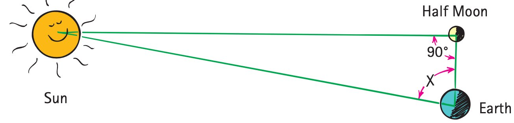

Chapter 1
About Science
Scientific Measurements
Measurements are a hallmark of good science. How much you know about something is often related to how well you can measure it. This was well put by the famous physicist Lord Kelvin in the 19th century: “I often say that when you can measure something and express it in numbers, you know something about it. When you cannot measure it, when you cannot express it in numbers, your knowledge is of a meager and unsatisfactory kind. It may be the beginning of knowledge, but you have scarcely in your thoughts advanced to the stage of science, whatever it may be.” Scientific measurements are not something new but go back to ancient times. In the 3rd century bc, for example, fairly accurate measurements were made of the sizes of the Earth, Moon, and Sun, and the distances between them.
How Eratosthenes Measured the Size of Earth
The size of Earth was first measured in Egypt by Eratosthenes in about 235 bc. He calculated the circumference of Earth in the following way. He knew that the Sun is highest in the sky at noon on the day of the summer solstice (which occurs around June 21 on today’s calendars). At this time, a vertical stick casts its shortest shadow. If the Sun is directly overhead, a vertical stick casts no shadow at all. Eratosthenes learned from library information that the Sun was directly overhead at noon on the day of the summer solstice in Syene, a city south of Alexandria (where the Aswan Dam stands today). At this particular time, sunlight shines directly down a deep well in Syene and is reflected back up again. Eratosthenes reasoned that, if the Sun’s rays were extended into Earth at this point, they would pass through the center. Likewise, a vertical line extended into Earth at Alexandria (or anywhere else) would also pass through Earth’s center.

At noon on June 22, Eratosthenes measured the shadow cast by a vertical pillar in Alexandria and found it to be 1/8 the height of the pillar (Figure 1.1). This corresponds to a 7.1° angle between the Sun’s rays and the vertical pillar. Since 7.1° is 7.1/360, or about 1/50 of a circle, Eratosthenes reasoned that the distance between Alexandria and Syene must be 1/50 the circumference of Earth. Thus the circumference of Earth becomes 50 times the distance between these two cities. This distance, quite flat and frequently traveled, was measured by surveyors to be about 5000 stadia (800 kilometers). So Eratosthenes calculated Earth’s circumference to be 50 × 5000 stadia = 250,000 stadia. This is very close to the currently accepted value of Earth’s circumference.
We get the same result by bypassing degrees altogether and comparing the length of the shadow cast by the pillar to the height of the pillar. Geometrical reasoning shows, to a close approximation, that the ratio shadow length/pillar height is the same as the ratio distance between Alexandria and Syene/Earth’s radius. So, just as the pillar is 8 times taller than its shadow, the radius of Earth must be 8 times greater than the distance between Alexandria and Syene.
Since the circumference of a circle is 2π times its radius (C = 2πr), Earth’s radius is simply its circumference divided by 2π. In modern units, Earth’s radius is 6370 kilometers and its circumference is 40,000 km.
Science is the body of knowledge that describes the order within nature and the causes of that order. Science is also an ongoing human activity that represents the collective efforts, findings, and wisdom of the human race, an activity that is dedicated to gathering knowledge about the world and organizing and condensing it into testable laws and theories. Science had its beginnings before recorded history, when people first discovered regularities and relationships in nature, such as star patterns in the night sky and weather patterns—when the rainy season started or when the days grew longer. From these regularities, people learned to make predictions that gave them some control over their surroundings.
Science made great headway in Greece in the 4th and 3rd centuries bc, and spread throughout the Mediterranean world. Scientific advance came to a near halt in Europe when the Roman Empire fell in the 5th century ad. Barbarian hordes destroyed almost everything in their paths as they overran Europe. Reason gave way to religion, which plunged Europe into the Dark Ages. During this time, the Chinese and Polynesians were charting the stars and the planets and Arab nations were developing mathematics and learning about the production of glass, paper, metals, and various chemicals. Greek science was re-introduced to Europe by Islamic influences that penetrated into Spain during the 10th, 11th, and 12th centuries. Universities emerged in Europe in the 13th century, and the introduction of gunpowder changed the social and political structure of Europe in the 14th century. In the 15th century art and science were beautifully blended by Leonardo da Vinci. Scientific thought was furthered in the 16th century with the advent of the printing press.
Size of the Moon
Another Greek scientist of the same era was Aristarchus, who was likely the first to suggest that Earth spins on its axis once a day, which accounted for the daily motion of the stars. He also hypothesized that Earth moves around the Sun in a yearly orbit and that the other planets do likewise.1 Aristarchus correctly calculated the Moon’s diameter and its distance from Earth. He accomplished all this in about 240 bc, seventeen centuries before his findings were fully accepted.
Aristarchus compared the size of the Moon with the size of Earth by watching an eclipse of the Moon. Earth, like any body in sunlight, casts a shadow. An eclipse of the Moon is simply the event in which the Moon passes into this shadow. Aristarchus carefully studied this event and found that the width of Earth’s shadow out at the Moon was 2.5 Moon diameters. This would seem to indicate that the Moon’s diameter is 2.5 times smaller than Earth’s. But, because of the huge size of the Sun, Earth’s shadow tapers, as evidenced during a solar eclipse. (Figure 1.2 shows this in exaggerated scale.) At that time, Earth intercepts the Moon’s shadow—but just barely. The Moon’s shadow tapers almost to a point at Earth’s surface, evidence that the taper of the Moon’s shadow at this distance is 1 Moon diameter. So during a lunar eclipse Earth’s shadow, covering the same distance, must also taper 1 Moon diameter. If the tapering of the Sun’s rays is taken into account, Earth’s diameter must be (2.5 + 1) times the Moon’s diameter. In this way, Aristarchus showed that the Moon’s diameter is 1/3.5 that of Earth’s. The presently accepted diameter of the Moon is 3640 km, within 5% of the value calculated by Aristarchus.

The 16th-century Polish astronomer Nicolaus Copernicus caused great controversy when he published a book proposing that the Sun is stationary and that Earth revolves around the Sun. These ideas conflicted with the popular view that Earth was the center of the universe. They also conflicted with Church teachings and were banned for 200 years. The Italian physicist Galileo Galilei was arrested for popularizing the Copernican theory and for some astronomical discoveries of his own. Yet, a century later, the ideas of Copernicus and Galileo were generally accepted.
This kind of cycle happens age after age. In the early 1800s, geologists met with violent condemnation because they differed with the Genesis account of creation. Later in the same century, geology was accepted, but theories of evolution were condemned and the teaching of them was forbidden. Every age has its groups of intellectual rebels who are condemned and sometimes persecuted at the time but who later seem harmless and often essential to the elevation of human conditions. As Count M. Maeterlinck wisely said, “At every crossway on the road that leads to the future, each progressive spirit is opposed by a thousand men appointed to guard the past.”

Distance to the Moon
Tape a small coin, such as a dime, to a window and view it with one eye so that it just blocks out the full Moon. This occurs when your eye is about 110 coin diameters away from the coin. Then the ratio coin diameter/coin distance is about 1/110. Geometrical reasoning from similar triangles shows this is also the ratio Moon diameter/Moon distance (Figure 1.4). So the distance from you to the Moon is 110 times the Moon’s diameter. The early Greeks knew this. Aristarchus’s measurement of the Moon’s diameter was all that was needed to calculate the Earth–Moon distance. So the early Greeks knew both the size of the Moon and its distance from Earth.
With this information, Aristarchus calculated the Earth–Sun distance.

Distance to the Sun
If you were to repeat the coin-and-Moon exercise for the Sun (which would be dangerous to do because of the Sun’s brightness), guess what? The ratio Sun diameter/Sun distance is also 1/110. This is because the sizes of the Sun and Moon are both the same to the eye. They both taper the same angle (about 0.5°). However, although the ratio of diameter to distance was known to the early Greeks, diameter alone or distance alone would have to be determined by some other means. Aristarchus found a method for doing this. Here’s what he did.
Aristarchus watched for the phase of the Moon when it was exactly half full, with the Sun still visible in the sky. Then the sunlight must be falling on the Moon at right angles to his line of sight. This meant that the lines between Earth and the Moon, between Earth and the Sun, and between the Moon and the Sun form a right triangle (Figure 1.5).
A rule of trigonometry states that, if you know all the angles in a right triangle plus the length of any one of its sides, you can calculate the length of any other side. Aristarchus knew the distance from Earth to the Moon. At the time of the half Moon he also knew one of the angles, 90°. All he had to do was measure the second angle between the line of sight to the Moon and the line of sight to the Sun. Then the third angle, a very small one, is 180° minus the sum of the first two angles (the sum of the angles in any triangle = 180°).
Measuring the angle between the lines of sight to the Moon and Sun is difficult to do without a modern transit. For one thing, both the Sun and Moon are not points, but are relatively big. Aristarchus had to sight on their centers (or either edge) and measure the angle between—quite large, almost a right angle itself! By modern-day standards, his measurement was very crude. He measured 87°, while the true value is 89.8°. He figured the Sun to be about 20 times farther away than the Moon, when in fact it is about 400 times as distant. So, although his method was ingenious, his measurements were crude. Perhaps Aristarchus found it difficult to believe the Sun was so far away, and he erred on the nearer side. We don’t know.
Today we know the Sun is an average of 150,000,000 kilometers from Earth. It is somewhat closer to Earth in December (147,000,000 km) and somewhat farther away in June (152,000,000 km).

The Sun is directly overhead at noon only near the equator. Standing in the sunshine at the equator, you cast no shadow. At locations farther from the equator, the Sun is never directly overhead at noon. The farther you stand from the equator, the longer is the shadow your body casts.
Size of the Sun
Once the distance to the Sun is known, the 1/110 ratio of diameter/distance enables a measurement of the Sun’s diameter. Another way to measure the 1/110 ratio, besides the method of Figure 1.4, is to measure the diameter of the Sun’s image cast through a pinhole opening. You should try this. Poke a hole in a sheet of opaque cardboard and let sunlight shine on it. The round image that is cast on a surface below is actually an image of the Sun. You’ll see that the size of the image does not depend on the size of the pinhole but, rather, on how far away the pinhole is from the image. Bigger holes make brighter images, not bigger ones. Of course, if the hole is very big, no image is formed. Careful measurement will show that the ratio of image size to pinhole distance is 1/110—the same as the ratio Sun diameter/Sun–Earth distance (Figure 1.6).
Interestingly, at the time of a partial solar eclipse, the image cast by the pinhole will be a crescent shape—the same as that of the partially covered Sun. This provides an alternate way to view a partial eclipse without looking at the Sun.
Have you noticed that the spots of sunlight you see on the ground beneath trees are perfectly round when the Sun is overhead and spread into ellipses when the Sun is low in the sky? These are pinhole images of the Sun, where sunlight shines through openings in the leaves that are small compared with the distance to the ground below. A round spot 10 centimeters in diameter is cast by an opening that is 110 × 10 cm above ground. Tall trees make large images; short trees make small images. And, at the time of a partial solar eclipse, the images are crescents (Figure 1.7).

Mathematics—The Language of Science
Science and human conditions advanced dramatically after the integration of science and mathematics some four centuries ago. When the ideas of science are expressed in mathematical terms, they are unambiguous. The equations of science provide compact expressions of relationships between concepts. They don’t have the multiple meanings that so often confuse the discussion of ideas expressed in common language. When findings in nature are expressed mathematically, they are easier to verify or to disprove by experiment. The mathematical structure of physics will be evident in the many equations you will encounter throughout this book. The equations are guides to thinking that show the connections between concepts in nature. The methods of mathematics and experimentation led to enormous success in science.2